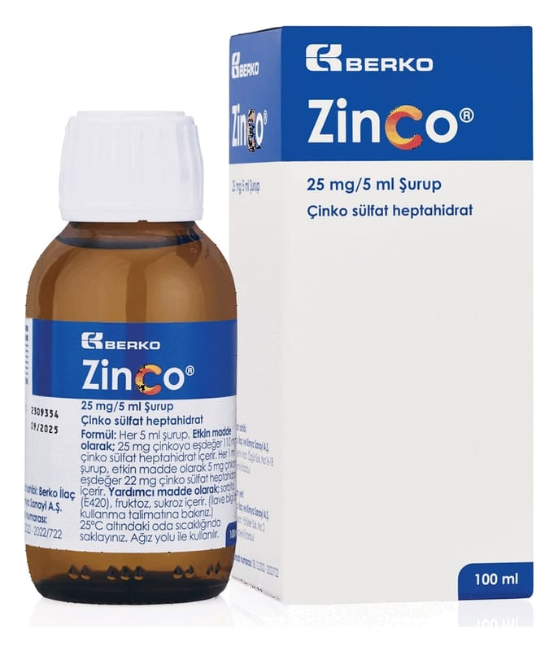

Zinco 25 mg/5 ml Şurup, 100 ml

Ne için kullanılır
KT · Bölüm 1• ZİNCO, çinko içeren şuruptur. 100 ml şurup içeren amber renkli cam şişede, 5 ml’lik kaşık (0,5 ml-1,25 ml-2,5 ml-5,0 ml’ye işaretli) ile beraber sunulur. • Çinko eksikliğinin önlenmesinde/tedavisinde ve/veya vücutta aşırı derecede bakır birikmesi hastalığında (Wilson) ve/veya çinko emilim bozukluğunda (akrodermatitis enteropatika) kullanılır.